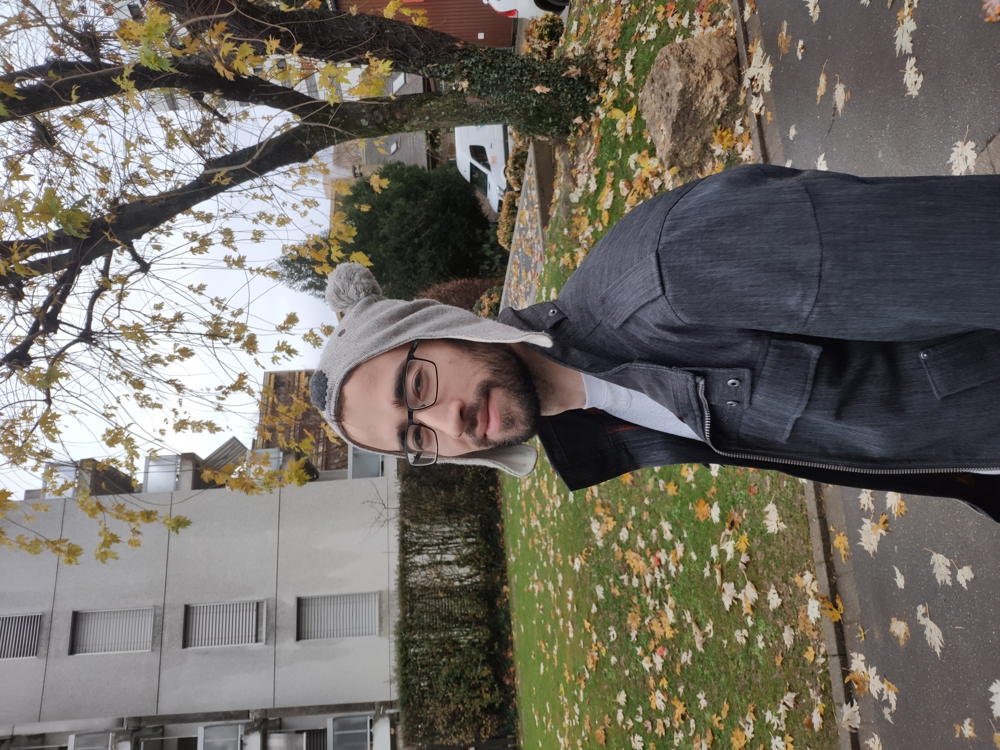

|  |
Jakab TardosEmail: firstname dot lastname at epfl dot ch[google scholar][dblp] |
I am currently doing my PhD at EPFL in Computer Science working with Prof. Michael Kapralov. My main research interests are sublinear algorithms for graph analysis. In particular I have worked on sparsification, matchings, and clustering in various regimes of submodular computation.
Xinrui Jia, Lars Rohwedder, Kshiteej Sheth and Ola Svensson.
Towards Non-Uniform k-Center with Constant types of Radii.
SOSA 2022.
[arxiv link]
Xinrui Jia, Kshiteej Sheth and Ola Svensson.
Fair Colorful k-Center Clustering.
Math. Programming 2021.
Preliminary version in IPCO 2020 .
[arxiv link].
Kshiteej Sheth, Dinesh Garg and Anirban Dasgupta.
Improved linear embeddings via Lagrange duality.
Machine Learning 2019.
[paper link].
Ashish Mahabal, Kshiteej Sheth, Fabian Gieseke et. al.
Deep-learnt classification of light curves.
IEEE SSCI 2017.
[paper link].